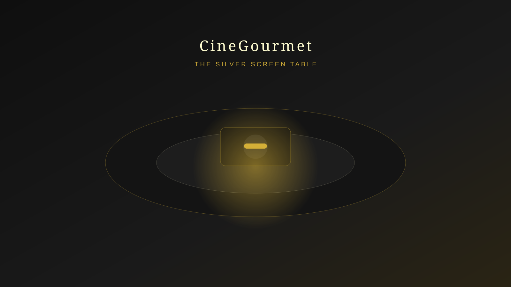

Watch the Scene
A curated sequence from a beloved food film is projected directly onto your table with cinematic sound design.

Immersive Cinematic Dining
Watch iconic food scenes unfold on your table, then taste them seconds later. Story, projection mapping, and fine cuisine become one perfectly synchronized performance.
The Experience
A curated sequence from a beloved food film is projected directly onto your table with cinematic sound design.
A miniature animated chef appears to prepare your next course in perfect rhythm with the movie's on-screen moment.
As the scene lands, your real dish arrives fresh, plated, and timed to the second for a seamless sensory reveal.
Featured Movie Experiences

Inspired by Ratatouille
A refined tribute to Paris with Confit Byaldi served at the precise emotional peak of the story.

Inspired by Chef
Bold street-food energy meets polished service with a rich Mojo Pork Sandwich reveal timed to the film's signature moment.

Inspired by Chocolat
Delicate artisanal chocolates arrive with enchanting visuals, designed for a warm and nostalgic finale.
Join the priority waitlist to access first-release dates, chef previews, and opening-night invitations.
Join the Waitlist